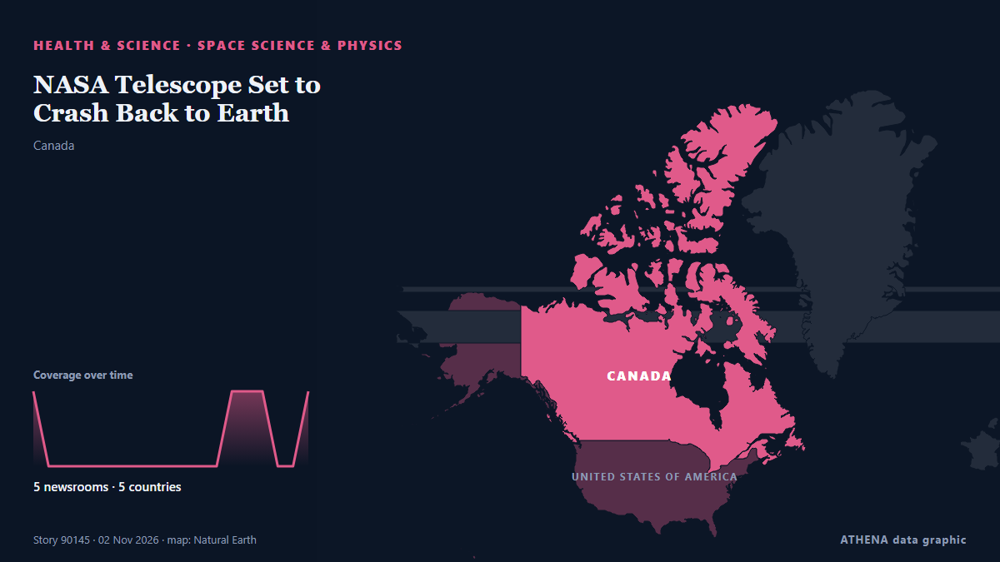

Health, Science & Research
SponsoredPresented by  Cybernetics and Artificial Intelligence Lab Welcome to the Cybernetics and Artificial Intelligence Laboratory, established at the Department of Business Administration of the National and Kapodistrian University of Athens. The lab is headed by Professor Dimitrios Thomakos. The lab aims to do research that can be published in top venues. Our research uses tools and methods of Artificial Intelligence, and lies in the following areas: - Forecasting - Decision making - Cyber security - Finance We are always looking forward to collaborating with exceptional students!
Cybernetics and Artificial Intelligence Lab Welcome to the Cybernetics and Artificial Intelligence Laboratory, established at the Department of Business Administration of the National and Kapodistrian University of Athens. The lab is headed by Professor Dimitrios Thomakos. The lab aims to do research that can be published in top venues. Our research uses tools and methods of Artificial Intelligence, and lies in the following areas: - Forecasting - Decision making - Cyber security - Finance We are always looking forward to collaborating with exceptional students!

Space science & physicsNASA Telescope Set to Crash Back to Earth
It's gripping, clear and more informative than “NASA Telescope in Freefall,” while making it clear the re-entry is still expected. from News of Bahrain
| 21 Oct | 40 |
|---|---|
| 22 Oct | 81 |
| 23 Oct | 76 |
| 24 Oct | 36 |
| 25 Oct | 45 |
| 26 Oct | 84 |
| 27 Oct | 80 |
| 28 Oct | 79 |
| 29 Oct | 90 |
| 30 Oct | 83 |
| 31 Oct | 46 |
| 1 Nov | 33 |
| 2 Nov | 89 |
| 3 Nov | 32 |
US approves cheap version of HIV prevention shot
The approval was granted under the US FDA's President's Emergency Plan for AIDS Relief (PEPFAR) program, Dr. from Channels TV
Jetour Bahrain Marks Breast Cancer Awareness Month with Pink Campaign
The ‘United in Pink’ initiative highlights the importance of breast cancer awareness, early detection and community support. from News of Bahrain
World News in Brief: healthcare crisis in Yemen’s Taiz and Afghanistan, Western Sahara mission's phased closure
The humanitarian crisis in Yemen is worsening, particularly in the southwestern city of Taiz, which is being encircled by paramilitary Iran-backed Houthi forces. from UN News
Ebola outbreak kills more than 5,300 people – Africa CDC
Africa's latest Ebola outbreak has killed more than 5,300 people, the vast majority of them in the Democratic Republic of Congo, according to the continent's top health agency. from Vanguard
Thousands of young people to get easier access to savings under Government plans
The moves to make access to child trust funds simpler aim to help young people who lack mental capacity. from Evening Standard (London)
Ebola survivors comfort sick children in Congo’s isolation wards
BUTEMBO, Congo, Nov 3 - Whenever Jerkis Mahamba hears a child cry out in the Ebola ward in Butembo, eastern Democratic Republic of Congo, he puts on protective gear and rushes to their side. from The Straits Times
Amansie youth benefit from Asanko Gold apprenticeship programme
Youth from communities in the Amansie South and Amansie West districts are benefiting from a Community Skills and Apprenticeship Programme spearheaded by Asanko Gold Ghana Ltd. from MyJoyOnline
EU and UK set to offer each other local university tuition fees
The two sides are also expected to secure a pact to ease post-Brexit customs checks on animal and agriculture products at 20 November summit, sources claim. from Luxembourg Times
Ancient Meteorite Found in the Sahara Holds Secrets About Mars’ Watery Past
The 4.1-billion-year-old meteorite is a “Rosetta Stone for Mars,” preserving clues about how the Martian environment has changed since the solar system formed. from Wired
Dutch police offer £1.6m reward for help finding cocaine kingpin on the run
Dutch prosecutors are offering a staggering £1.6million reward for any information leading to the arrest of Jos Leijdekkers. from The Independent
Latvia to chair UN Security Council for first time in its history
Latvia will assume the rotating presidency of the United Nations Security Council for the first time in its history on November 1, serving in the role for one month, the country’s Foreign Ministry… from AzerNews
Sales of Galaxy Z Fold 8 increase following launch of Apple's 1st foldable smartphone
SEOUL, Nov. 3 (Yonhap) -- Domestic sales of Samsung Electronics Co.'s latest Gal... from Yonhap (English)
Nora Fatehi not an accused in Sukesh Chandrashekhar case, says actor’s legal team
Nora Fatehi will need to appear before a Delhi court on November 6, 2026, after missing an earlier hearing in the long-running extortion case linked to conman Sukesh Chandrashekhar. from Gulf News
Hearing of the Irakli Garibashvili case on its merits to start today, to be attended by Garibashvili
Irakli Garibashvili is already serving a prison sentence for money laundering. from JAMnews (English)
The moon, Mars, and Jupiter shine in the heart of the Lion overnight on Nov. 1-2
The waning moon shines with Jupiter, Mars and the brilliant star Regulus in the eastern sky overnight Nov. from Space.com
Evidence of red bloods cells found in 115 115 million-year-old dinosaur’s bones
A 67-million-year-old fossil has attracted extraordinary attention after a fierce bidding battle in New York. from Indian Defence Review
Ethiopia attacks kill civilians as health system nears collapse, WHO chief says
The World Health Organization reports that attacks in northern Ethiopia are pushing the region's fragile health system closer to collapse. from ABC News (International)
Ebola outbreak kills more than 5,300 people in DR Congo
The Bundibugyo strain has spread to Kenya and Uganda, while two in Nigeria returned negative results. from Al Jazeera English
US inmate Christa Pike says she woke up 'confused and in pain' after failed execution
It is Pike's first public statement since she survived an execution attempt by lethal injection in September. from BBC News
NASA telescope is on the verge of plunging back to Earth after failed rescue mission
CAPE CANAVERAL, Fla. (AP) — An aging NASA telescope is barely clinging to space after a failed rescue effort left it tottering lower and lower. from The Canadian Press (via CityNews)
PM stresses timely completion, efficient management for Jinnah Medical Complex
ISLAMABAD: Prime Minister Shehbaz Sharif was informed on Monday that a 403-bed hospital under construction in the capital was expected to become operational by March 23, 2027, with 59 percent of the… from Business Recorder
WHO urged to review drinking water standards amid nitrate health fears
The toxic effects of nitrates are widely recognised as particularly dangerous for children and pregnant women. from The Straits Times
Meteor showers to light up skies in November
"Even in the city, some of these meteors will be bright enough that you'll be able to see them." [ more › ]. from Gothamist (New York City)
Doctor in Germany on trial over sex abuse of over 70 children
The doctor was arrested roughly a year ago after the mother of a child reported suspected abuse to authorities. from IOL
Colombia Offers 120 Healthcare Jobs in Spain With Permanent Contracts
Colombia has opened 120 healthcare jobs in Spain for doctors and nurses, offering permanent contracts and monthly salaries equivalent to approximately 8 million to 12 million pesos… from Colombia One
Health insurance plan costs on Healthcare.gov to rise by double digits in 2027
Obamacare enrollees could see their health insurance premiums rise by double digits for a second year in a row, according to a report published Friday. from The Hill
WHO Chief: Ebola Reminder of Urgent Need to Finish Pandemic Treaty
Deadly outbreaks like the Ebola epidemic raging in the Democratic Republic of Congo show the urgent need to complete an international pandemic treaty, the World Health Organization chief said Monday. from Vanguard
Samples for two suspected Ebola cases in Nigeria turn out negative
Health authorities in Nigeria confirmed that samples from two suspected Ebola cases tested negative after two rounds of testing. from Arab News
Strange beaked 'hell chicken' is the first fruit-eating dinosaur
vInfernogallus, meaning "hell chicken", is named after its bird-like look and Hell Creek fossil site. from Express Tribune
BDK Organises Breast Cancer Awareness
Free Health Screenings Held for Attendees in Salmabad. from News of Bahrain
Samsung Built the Foldable First. Now Apple Wants the Creator Crowd
The next smartphone war is being fought one creator at a time. from Inc.
Britain shouldn’t apologise for slave trade; Africa profited — Kemi Badenoch
Speaking to broadcasters yesterday, Badenoch described slavery as an evil “in which people from every continent and region participated” from Vanguard
More than 5,000 die from Ebola in DR Congo’s deadliest outbreak
Government data shows that more than 10,000 people have contracted the rare virus. from BBC News
More than 1,500 people awaiting organ donation in Azerbaijan
Thessaloniki's George Papanikolaou Hospital ranks first in Northern Greece for organ donation as doctors highlight the process and its life-saving impact. from Greek City Times